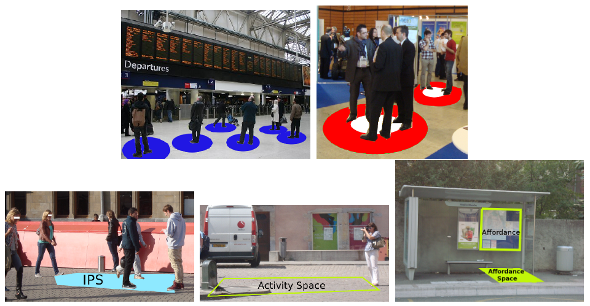
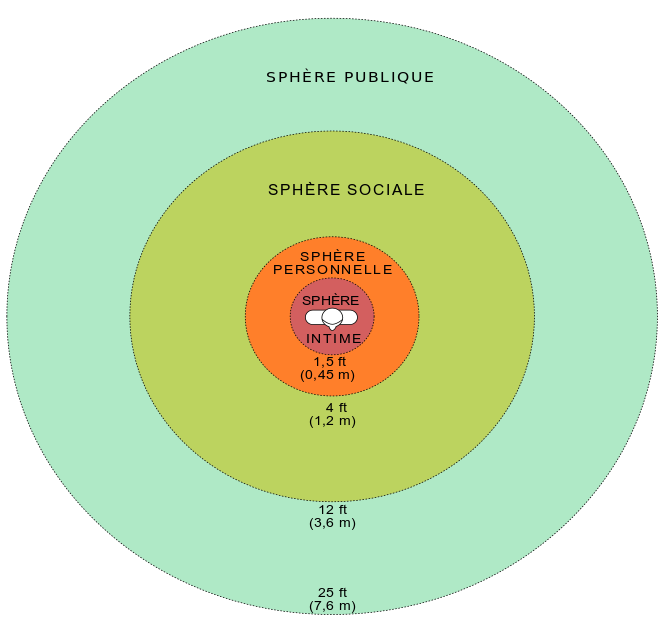
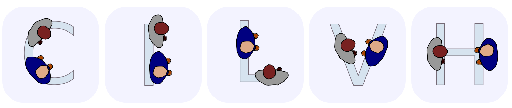
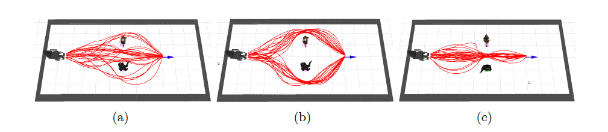
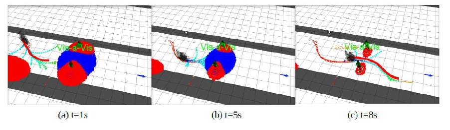
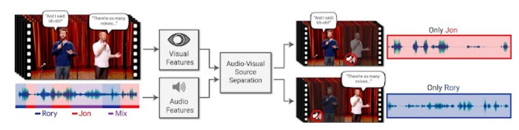

Reachy Mobile
Reachy Mobile
Contexte
EirLab a fait l'acquisition de deux équipements :
- Une base mobile à 2 roues EZ-WHEEL
- Un robot semi humanoïde REACHY
Ces deux robots disposent à eux d'eux d'un LIDAR, d'une batterie, de deux caméras RGB, d'un haut-parleur et d'un micro directionnel, d'un TPU Google Coral pour des applications d'intelligence artificelle et réseaux de neurones.
Objectifs
L'objectif est d'assembler ces deux robots et réaliser un logiciel embarqué qui puisse accueillir les visiteurs d'un sallon (100 ans de l'ENSEIRB-MATMECA) et leur fournir du contenu utile pour leur visite : localisation des salles et toilettes, jeux interactifs, etc.
L'état de l'art devra proposer des fonctionnalités et des implémentations variées, le prototype se concentrera sur un nombre limité de fonctionnalités afin de livrer un REACHY MOBILE robuste et qui puisse être utilisé lors du salon.
État de l'art
Résumé
Parmi les différents cobots existant, les cobots de service sont ceux évoluant le plus proche des humains. Les utilisations de ces derniers sont variées (guidage dans un aéroport, aide à la personne ...) et la construction d'un cobot de service implique de relever plusieurs défis.
Dans le cas d'un cobot de service mobile, il est nécessaire de faire en sorte que ce robot puisse se déplacer dans un environnement dynamique et incertain avec une certaine fiabilité. Pour cela une modélisation du monde, comme celle par grille d'occupation probabiliste, est utilisée pour permettre au cobot de traduire ce que ses capteurs perçoivent et sa position dans l'environnement. De plus une stratégie d'élaboration de trajectoires prenant en compte l'incertitude sur l'environnement et le dynamisme de ce dernier est nécessaire. Pour ce défi, les méthodes délibératives et plus particulièrement l'algorithme \textit{riskRRT} permettent de fournir une solutions.
En plus de la navigation, un cobot de service a pour rôle d'interagir avec les humains. Pour cela il est nécessaire d'étudier et de proposer une implémentation des règles sociales par la théorie proxémique. Au-delà du respect des règles sociales, il est nécessaire de mettre en place un moyen de communication entre le cobot et les humains. Plusieurs techniques peuvent être utilisées comme la reconnaissance vocale, la détection de gestes ou l'\textit{eye-contact}. L'intégration de ces règles et de cette communication est une phase clé permettant de passer d'un robot ayant la capacité de naviguer dans une foule à un robot interagissant convenablement avec cette foule.
Finalement, lorsqu'un robot de service est capable de naviguer dans une foule et d'interagir correctement avec des humains, il reste à fournir du contenu lors de ces interactions pour que le cobot ait une réelle utilité. Ces interactions peuvent avoir différentes formes comme guider les utilisateurs vers des points d'intérêts, faire visiter un espace ou dans notre cas jouer à des jeux simples. Dans le cadre des jeux, nous pouvons citer un jeu de plateau, le tictactoe qui nécessite de détecter des formes sur un plateau pour jouer et établir une stratégie de jeux. Ou le chifoumi qui nécessite de détecter la forme de la main pour savoir qui entre le robot et l'humain a gagné. Ces deux détections sont résolues en utilisant du \textit{deep learning} permettant de s'adapter à une grande variété de situations.
Introduction
Depuis la révolution industrielle, les automates puis la robotique tendent à aider l'humain dans les différentes tâches qu'il doit réaliser, principalement dans les tâches de production en usine. Cependant, nombre de robots possèdent sont performants lorsqu'ils sont isolés (parfois en cage) et que l'humain n'est là que pour contrôler globalement l'ensemble des procédés. Imaginer un robot évoluant librement dans un magasin sans gêner, ni physiquement, ni psychologiquement, les usagers soulève des problématiques.
Depuis 1996, J. E. Colgate, W. Wannasuphoprasit et M. A. Peshkin ont proposé une définition de la notion de cobotique, cette notion a été subdivisée avec le temps en trois grands domaines de la cobotique. D'une part la cobotique industrielle permettant de répondre aux tâches difficiles et pénibles ou à très faible valeur ajoutée. Le cobot asiste en direct les gestes de l'opérateur en démultipliant ses capacités pour manipuler en sécurité des pièces chaudes, lourdes, encombrantes, petites ... La cobotique médicale, parfaitement illustrée par le cobot Da Vinci qui permet d'assister un chirurgien lors d'une opération. Finalement la cobotique qui va nous intéresser pendant ce projet, la cobotique dites conviviale, elle consiste à utiliser des robots, le plus souvent humanoïdes (par exemple le robot NAO), pour établir des communications et rendre des services. Cette utilisation prend son sens dans la robotique de service, où le robot humanoïde est par exemple appelé à guider, interagir et rendre des services1.
C'est dans ce cadre de la cobotique de service que s'inscrit notre projet, en effet, notre client souhaite disposer d'un robot de service dans le cadre des 100 ans de l'ENSEIRB-MATMECA. L'objectif de ce robot est de fournir du contenu utile aux visiteurs comme leur indiquer la localisation des salles, des toilettes, proposer des jeux interactifs, etc. Pour se faire nous avons à notre disposition deux robots indépendants, d'une part un robot de navigation EZ-WHEEL et un robot semi-humanoïde REACHY. L'objectif de ce projet est d'intégrer les deux robots ensemble sur l'environnement ROS. Cette intégration couvre plusieurs domaines puisque nous devons à la fois réaliser l'intégration mécatronique, réaliser les algorithmes de navigation adéquats à ce nouveau robot et prévoir des interactions avec les visiteurs pour que ce robot soit une réelle valeur ajoutée à l'événement et non une curiosité à la limite de la vallée de l'étrange. Cela nous amène donc à la problématique générale de ce projet, comment concevoir un cobot destiné aux interactions humaines lors d'événements ?
Le contexte de ce projet soulève d'abord une problématique de foule, en effet le robot devra évoluer dans un environnement densément peuplé, il devra même faire plus qu'une simple navigation dans cet environnement, il devra être capable de détecter les humains et interagir avec eux de manière adéquate. Dans cet optique, nous allons orienter notre état de l'art selon trois axes, premièrement les questions de navigation dans un environnement dynamique et incertain sont traitées. Nous rajouterons ensuite le fait qu'un humain n'est pas un simple objet en mouvement, mais qu'il obéit à certaines règles sociales. Pour que notre robot soit suffisamment accepté il est nécessaire d'étudier ces règles sociales pour, in fine, en faire un modèle et l'intégrer au robot. Finalement notre robot est amené à interagir avec les gens et à réaliser des jeux avec lui. Que ce soit pour l'interaction ou pour les jeux il est nécessaire qu'il possède la capacité de voir et de comprendre la sémantique derrière la vision, nous traitons donc des différents algorithmes qui seront utilisées.
Exemple d'un robot de service à l'aéroport de Genève : https://www.youtube.com/watch?v=Jdc_AmLVlVI
État de l'art
Résumé
Parmi les différents cobots existant, les cobots de service sont ceux évoluant le plus proche des humains. Les utilisations de ces derniers sont variées (guidage dans un aéroport, aide à la personne ...) et la construction d'un cobot de service implique de relever plusieurs défis.
Dans le cas d'un cobot de service mobile, il est nécessaire de faire en sorte que ce robot puisse se déplacer dans un environnement dynamique et incertain avec une certaine fiabilité. Pour cela une modélisation du monde, comme celle par grille d'occupation probabiliste, est utilisée pour permettre au cobot de traduire ce que ses capteurs perçoivent et sa position dans l'environnement. De plus une stratégie d'élaboration de trajectoires prenant en compte l'incertitude sur l'environnement et le dynamisme de ce dernier est nécessaire. Pour ce défi, les méthodes délibératives et plus particulièrement l'algorithme \textit{riskRRT} permettent de fournir une solutions.
En plus de la navigation, un cobot de service a pour rôle d'interagir avec les humains. Pour cela il est nécessaire d'étudier et de proposer une implémentation des règles sociales par la théorie proxémique. Au-delà du respect des règles sociales, il est nécessaire de mettre en place un moyen de communication entre le cobot et les humains. Plusieurs techniques peuvent être utilisées comme la reconnaissance vocale, la détection de gestes ou l'\textit{eye-contact}. L'intégration de ces règles et de cette communication est une phase clé permettant de passer d'un robot ayant la capacité de naviguer dans une foule à un robot interagissant convenablement avec cette foule.
Finalement, lorsqu'un robot de service est capable de naviguer dans une foule et d'interagir correctement avec des humains, il reste à fournir du contenu lors de ces interactions pour que le cobot ait une réelle utilité. Ces interactions peuvent avoir différentes formes comme guider les utilisateurs vers des points d'intérêts, faire visiter un espace ou dans notre cas jouer à des jeux simples. Dans le cadre des jeux, nous pouvons citer un jeu de plateau, le tictactoe qui nécessite de détecter des formes sur un plateau pour jouer et établir une stratégie de jeux. Ou le chifoumi qui nécessite de détecter la forme de la main pour savoir qui entre le robot et l'humain a gagné. Ces deux détections sont résolues en utilisant du \textit{deep learning} permettant de s'adapter à une grande variété de situations.
Introduction
Depuis la révolution industrielle, les automates puis la robotique tendent à aider l'humain dans les différentes tâches qu'il doit réaliser, principalement dans les tâches de production en usine. Cependant, nombre de robots possèdent sont performants lorsqu'ils sont isolés (parfois en cage) et que l'humain n'est là que pour contrôler globalement l'ensemble des procédés. Imaginer un robot évoluant librement dans un magasin sans gêner, ni physiquement, ni psychologiquement, les usagers soulève des problématiques.
Depuis 1996, J. E. Colgate, W. Wannasuphoprasit et M. A. Peshkin ont proposé une définition de la notion de cobotique, cette notion a été subdivisée avec le temps en trois grands domaines de la cobotique. D'une part la cobotique industrielle permettant de répondre aux tâches difficiles et pénibles ou à très faible valeur ajoutée. Le cobot asiste en direct les gestes de l'opérateur en démultipliant ses capacités pour manipuler en sécurité des pièces chaudes, lourdes, encombrantes, petites ... La cobotique médicale, parfaitement illustrée par le cobot Da Vinci qui permet d'assister un chirurgien lors d'une opération. Finalement la cobotique qui va nous intéresser pendant ce projet, la cobotique dites conviviale, elle consiste à utiliser des robots, le plus souvent humanoïdes (par exemple le robot NAO), pour établir des communications et rendre des services. Cette utilisation prend son sens dans la robotique de service, où le robot humanoïde est par exemple appelé à guider, interagir et rendre des services1.
C'est dans ce cadre de la cobotique de service que s'inscrit notre projet, en effet, notre client souhaite disposer d'un robot de service dans le cadre des 100 ans de l'ENSEIRB-MATMECA. L'objectif de ce robot est de fournir du contenu utile aux visiteurs comme leur indiquer la localisation des salles, des toilettes, proposer des jeux interactifs, etc. Pour se faire nous avons à notre disposition deux robots indépendants, d'une part un robot de navigation EZ-WHEEL et un robot semi-humanoïde REACHY. L'objectif de ce projet est d'intégrer les deux robots ensemble sur l'environnement ROS. Cette intégration couvre plusieurs domaines puisque nous devons à la fois réaliser l'intégration mécatronique, réaliser les algorithmes de navigation adéquats à ce nouveau robot et prévoir des interactions avec les visiteurs pour que ce robot soit une réelle valeur ajoutée à l'événement et non une curiosité à la limite de la vallée de l'étrange. Cela nous amène donc à la problématique générale de ce projet, comment concevoir un cobot destiné aux interactions humaines lors d'événements ?
Le contexte de ce projet soulève d'abord une problématique de foule, en effet le robot devra évoluer dans un environnement densément peuplé, il devra même faire plus qu'une simple navigation dans cet environnement, il devra être capable de détecter les humains et interagir avec eux de manière adéquate. Dans cet optique, nous allons orienter notre état de l'art selon trois axes, premièrement les questions de navigation dans un environnement dynamique et incertain sont traitées. Nous rajouterons ensuite le fait qu'un humain n'est pas un simple objet en mouvement, mais qu'il obéit à certaines règles sociales. Pour que notre robot soit suffisamment accepté il est nécessaire d'étudier ces règles sociales pour, in fine, en faire un modèle et l'intégrer au robot. Finalement notre robot est amené à interagir avec les gens et à réaliser des jeux avec lui. Que ce soit pour l'interaction ou pour les jeux il est nécessaire qu'il possède la capacité de voir et de comprendre la sémantique derrière la vision, nous traitons donc des différents algorithmes qui seront utilisées.
Exemple d'un robot de service à l'aéroport de Genève : https://www.youtube.com/watch?v=Jdc_AmLVlVI
Navigation dans une foule
L'un des aspects principaux d'un robot de service est sa capacité à naviguer dans son environnement. Le processus de navigation est un processus complexe, en effet un robot ne connaît qu'une partie de son environnement grâce à ses capteurs. [@lobo_sensors_2006] décrit en détail les avantages et inconvénients des capteurs qui existent. Bien que ce ne soit pas le centre de cette étude, retenons que les plus couramment utilisées sont les LIDARs (laser imaging detection and ranging, LIDAR) par leurs efficacité.
En plus de la connaissance partielle de l'environnement, pour obtenir une navigation de qualité, il est nécessaire de prendre en compte le contexte dans lequel le robot se place, en effet la navigation dans un environnement statique comme un entrepôt vide de gens, ou dans un environnement dynamique connu, comme un entrepôt occupé uniquement par des robots sont des problèmes différents par rapport à la navigation dans un lieu public. Cet environnement est à la fois dynamique et incertain, cette proposition contribue à complexifier le problème. En effet, des techniques qui se basent sur l'algorithme A* pour la recherche de chemin et des lignes magnétiques ou utilisant le RFID (radio frequency identification, RFID) [@xiao-long_robot_2017] ne permettent pas de correctement se déplacer dans un environnement densément peuplé.
L'objectif de cette partie est donc de répondre à la problématique suivante, comment un robot humanoïde peut-il se déplacer dans un environnement dynamique et incertain.
Modélisation de l'environnement
Dans un premier temps, avant de pouvoir naviguer quelque part, il est courant de permettre au robot de connaître son environnement à l'aide d'une modélisation de ce dernier. La construction de modèles d'environnements dynamiques et peuplés d'humains à partir de capteurs est complexe. Les scènes sont dynamiques, les conditions d'éclairage variables et les situations possibles nous empêchent de pré-calculer toutes les solutions. La plupart des modélisations existantes utilisent des grilles d'occupation, plusieurs méthodes existent pour les grilles d'occupation, parmi ces grilles trois sont notables comme avancé par [@moras_grilles_nodate].
La première est la grille d'accumulation, est inspirée du principe du vote. La construction de cette dernière s'effectue selon la manière suivante : plus une cellule est vue comme occupée, plus elle a de chances d'être occupée. Nous retrouvons ce genre de grille dans la cartographie d'un environnement extérieur via un LIDAR. Le deuxième paradigme utilisé est la grille d'occupation probabiliste, le formalisme probabiliste a été le premier formalisme de gestion des incertitudes utilisé dans les grilles d'occupation. Dans ce type d'approche, le principe d'inférence bayésienne est utilisé pour estimer la probabilité d'occupation dans cette cellule. Cette méthode permet entre autre de prendre en compte la dynamique de l'environnement, en couplant le calcul à l'aide du théorème de Bayes avec un Bayesian Occupancy Filter il est possible de déterminer non seulement l'occupation des cellules, mais aussi leur vitesse pour pouvoir réaliser la prédiction pour chaque cellule. Autrement dit, à l'aide de cette grille, il est possible d'estimer les cases qui sont occupées, mais aussi celles qui vont être occupées dans un futur proche. La dernière est la grille d'occupation évidentielle, cette dernière est couteuse à cause de sa complexité calculatoire, mais peut être utilisée pour la construction de grille d'occupation statique à partir de capteurs ultrasons décrit par [@pagac_evidential_1998].
Parmi ces différentes modélisations, le modèle de grille probabiliste se démarque dans le cas de la robotique de service, d'une part le calcul est simple et d'autre part elle permet de décrire des environnement dynamiques. Attardons-nous sur sa mise en place.
Soit l'état d'une cellule parmi deux possibilités exclusives, occupé $O$ ou libre $F$. Chaque cellule de la grille d'occupation $G_{ij}^O$ contient une probabilité d'occupation : $I_{ij}^O = P_{ij}(O)$. Nous pouvons aussi définir la probabilité que la cellule ne soit pas occupée $P_{ij}(F)$. Ces probabilités vérifient $\forall G_{ij}^O \in G^O, P(O) + P(F) = 1$. Dans cette approche, nous faisons l'hypothèse que toutes les cellules sont indépendantes entre elles.
Avant de décrire le fonctionnement de cette grille dans un environnement dynamique, nous allons la formaliser dans un environnement statique. Pour chaque cellule, nous cherchons la probabilité d'occupation conditionnelle $P(O | r_{1:k})$, où $r_{1:k} = {r_1, r_2, ..., r_k}$ représente l'ensemble des mesures obtenues jusqu'à cet instant $k$. D'après le théorème de Bayes, nous pouvons obtenir une équation qui, à chaque fois qu'une mesure est disponible, permet de faire la mise à jour de la grille $$P(O|r_{1:k}) = \dfrac{p(r_k | O) P(O|r_{1:k-1})}{p(r_k | O) P(O|r_{1:k-1}) + p(r_k | F) P( F|r_{1:k-1})}$$ où $p(r_t|O, r_{1:k-1})$ représente la vraisemblance de la mesure. Une fois cette probabilité obtenue il suffit d'appliquer la règle de décision suivante pour obtenir la fonction d'occupation notée $\mathcal{O}$ $$\mathcal{O}(G_{ij}) = \begin{cases} 1 \quad \text{si} \quad P_{ij}(O) > P_{ij}(F) \ 0 \quad \text{si} \quad P_{ij}(O) \leq P_{ij}(F) \end{cases}$$
Cette construction d'environnement est particulièrement bien adaptée à la construction de grille statique avec plusieurs capteurs, en effet, il est aisé de fusionner différentes grilles calculées à partir de plusieurs capteurs, les détails calculatoires de cette fusion ne seront pas abordés dans ce document. Cependant, il faut retenir que, ce paradigme permet de prendre en compte la vraisemblance des capteurs, de fusionner plusieurs sources d'informations, mais aussi d'en extraire l'information utile de manière optimale. Un exemple de construction de grille probabiliste à l'aide d'un LIDAR est présent en .
Nous avons donc un paradigme permettant de cartographier efficacement un environnement statique à l'aide de différents capteurs, poussons maintenant ce paradigme à un environnement dynamique. Pour prendre en compte la dynamique de l'environnement, certaines méthodes sont capables de traiter des problèmes dynamiques. Le Bayesian Occupancy Filter [@bessiere_bayesian_2008], l'approche se base à la fois sur l'occupation des cellules, mais aussi leur vitesse pour pouvoir réaliser la prédiction pour chaque celle. Dans cette approche, pour chaque cellule $c = G_{ij}^\mathcal{O}$, les variables estimées sont $O^c_t$, l'occupation au temps $t$ de la cellule $c$ et $A_t^c$, l'antécédent au temps $t$ de la cellule $c$. La vitesse d'une cellule $c$ prend valeur dans un ensemble discret et fini de vitesses possibles $V = {V_1, V_2, ..., V_n}$, comme indiqué sur la figure . À chaque vitesse discrète $V_k$ correspond une cellule $C_j$ appartenant au voisinage de $c$, de telle sorte que la cellule $C_j$ se déplace en $c$ si elle se déplace avec une vitesse $V_k$ durant un pas temporel.

L'objectif du BOF (Bayesian Occupancy Filter, BOF) est de calculer la probabilité $P(A^c_t, O^c_t | Z_t)$ ce qui peut être implémenté selon un schéma estimateur - prédicteur. Nous passerons sous silence les outils mathématiques associés à l'estimateur et au prédicteur. Il faut cependant retenir que le BOF est un outil puissant qui permet de propager la grille même si nous ne disposons pas de mesure pendant une courte période. Cette méthode a cependant la contrepartie de posséder un coût calculatoire élevé, car elle calcule toutes les hypothèses possibles suivant la zone de voisinage considérée pour l'ensemble des vitesses.
En somme, le modèle de grille d'occupation probabiliste permet de traduire un environnement dynamique et incertain de manière suffisante pour pouvoir être exploitable, il reste encore à étudier la planification d'une trajectoire dans cet environnement ainsi que l'intégration des règles sociales.
Planification dans un environnement incertain
Maintenant que nous avons vu comment avoir une représentation du monde qui nous entoure tout en tenant compte de la fiabilité de nos capteurs ainsi que du dynamisme de l'environnement nous pouvons étudier le problème de la planification de trajectoire. Cette planification doit évidemment tenir compte des paramètres de notre environnement et s'adapter à des situations incertaines. Pour ce type de navigation deux approches sont possibles, les approches délibératives et les approches réactives [@delsart_navigation_2011].
Les approches réactives consistent à calculer à chaque pas de temps (après récupération des informations sur l'environnement fournies par les capteurs du système) le contrôle instantané à appliquer sur les actionneurs du système. Plusieurs approches réactives existent, nous pouvons citer la navigation par diagrammes de proximité [@minguez_nearness_2000], la navigation basée sur les états de collisions inévitables [@martinez-gomez_collision_2009] ou encore la navigation par champs de potentiels [@khatib_real-time_1985]. Cette dernière est l'une des plus connues et facile à appliquer, elle consiste à considérer le robot mobile comme une particule soumise à divers champs électromagnétiques régissant son mouvement comme le montre la
Ces approches sont intéressantes et pourraient être utilisées dans le cadre de la navigation dans un environnement tel que le nôtre, cependant plusieurs limites apparaissent. En effet, ces modèles permettent de gérer les robots holonomes avec des obstacles se déplaçant à vitesse constante. Une perspective serait d'étendre ces modèles pour combler ces manques, mais nous pouvons aussi nous tourner vers d'autres méthodes de navigation : les méthodes délibératives.
Les méthodes délibératives consistent à résoudre un problème de planification de mouvement. La planification de mouvement est la détermination a priori d'une stratégie de mouvement entre une position initiale et une position finale du robot à partir d'une représentation de l'environnement dans lequel il évolue. Plusieurs méthodes existent dans ce domaine, nous pouvons citer la méthode par graphes où le but est de tenter de capturer la topologie de l'espace de recherche pour simplifier le problème à une recherche dans un graphe. Elles sont donc constituées de deux étapes :
-
Construction du graphe dans l'espace de recherche approprié
-
Parcours du graphe dans le but de déterminer un chemin ou une trajectoire entre les configurations initiale et finale
Le parcours du graphe s'effectue la plupart du temps en utilisant un algorithme heuristique tel que le A* [@hart_formal_1968]. Ce dernier est utilisé dans le but d'éviter l'exploration complète de l'espace de recherche. En parallèle de la planification classique par exploration d'un graphe de recherche sont apparues les méthodes par arbres. Celles-ci consistent à construire un arbre à partir de la configuration initiale du système. Cet arbre se développe ensuite dans toutes les directions du robot et dans la totalité de l'espace de recherche. Parmi les méthodes par arbre l'une des plus connues et utilisées sont les RRT (Rapidly-exploring Random Trees, RRT). Nous allons étudier plus en profondeur les algorithmes RRT et plus particulièrement l'une de ses variante, le RiskRRT.
Commençons par présenter l'algorithme RRT avant de présenter son extension. À partir d'une configuration initiale $q_0$, l'espace de configuration du système est exploré en choisissant aléatoirement à chaque itération une nouvelle configuration $q_{nv}$ non obstruée par les obstacles vers laquelle se diriger. La branche la plus proche de l'arbre déjà construit est alors déterminée puis étendue en direction de $q_{nv}$. En répétant le processus, l'espace de recherche est alors rapidement couvert, et un chemin vers toutes configurations de cet espace peut alors être facilement déterminée s'il en existe un. Le but de la planification étant néanmoins d'atteindre une configuration finale $q_f$, le processus essaie de déterminer un chemin liant la configuration la plus proche de l'arbre à $q_f$ après un certain nombre d'itérations de l'expansion de l'arbre [@delsart_navigation_2011]. Le fonctionnement de cet algorithme est illustré en

Le RiskRRT est une méthode de planification partielle conçue pour fonctionner en environnement dynamique et incertain [@spalanzani_contribution_2015]. Cette extension de l'algorithme RRT génère des trajectoires partielles orientées vers le but et évaluées par une probabilité de succès. L'algorithme permet de planifier une trajectoire dans des environnements partiellement connus, incertains, dynamiques et peuplé d'humains. Nous allons maintenant présenter l'algorithme RiskRRT. Ce dernier gère le fait que le robot ne connaît pas son environnement en totalité. L'algorithme va alors générer des trajectoires dans les zones visibles comme le montre la , la trajectoire la mieux notée selon nos critères est alors choisie. Le suivi de cette trajectoire est alors initié, l'algorithme étend alors l'arbre des trajectoires en fonction des nouvelles données disponibles, si une meilleure trajectoire est trouvée, le robot commencera à la suivre et ainsi de suite.

À ce stade l'algorithme est capable d'évoluer dans un environnement méconnu, mais il reste deux problématiques, comment évaluer chaque trajectoire d'une part et comment éviter les obstacles mobiles d'autre part.
En effet l'évaluation des différentes trajectoires générées par le RiskRRT, lors de la recherche de trajectoire, chaque nœud est évalué par un risque de collision. Ce risque de collision est calculé à l'aide de deux valeurs, la probabilité que le robot entre en collision avec un obstacle statique et la probabilité que le robot entre en collision avec un obstacle dynamique. Cette information est aisément calculable grâce à la grille d'occupation probabiliste présentée en . In fine le coût dépend de la distance qui le rapproche d'un but et de son orientation par rapport à l'orientation au but, mais aussi de sa probabilité de collision.
Il reste à traiter le cas des obstacles dynamiques dans le cadre de cet algorithme, pour cela, le RiskRRT suppose que les obstacles dynamiques suivent des trajectoires typiques et ne sont pas des particules errant aléatoirement dans l'espace. Les méthodes de prédiction de la position des obstacles mobiles sont variés, nous pouvons citer la prédiction linéaire à court terme [@fulgenzi_probabilistic_2009] si le robot possède peu d'information sur l'environnement voir des modèles à plus long terme [@govea_incremental_2007]. Ces modèles sont appris en amont et utilisés pendant l'évolution du robot, [@spalanzani_contribution_2015] en fait l'exemple dans la .

En somme la combinaison du calcul du coût probabiliste et la prévision des trajectoires des obstacles peut permettre de générer des trajectoires fiables permettant de naviguer dans un environnement incertain et dynamique. La résume cet algorithme dans un cas d'utilisation où un robot doit naviguer tout en évitant deux obstacles dynamiques.
Pour conclure cette partie, il a été présenté deux concepts fondamentaux. D'une part la modélisation du monde en tenant compte des incertitudes des capteurs et du dynamisme de l'environnement. Cette notion a été abordée à l'aide des modèles de grilles d'occupation et plus précisément des grilles d'occupation probabilistes. D'autre part les algorithmes de planification de trajectoire dans un environnement dynamique ont été présenté via la division entre les algorithmes réactifs et les algorithmes délibératifs. Un algorithme délibératif, le RiskRRT, utilisant les grilles d'occupation probabiliste et particulièrement bien adapté à un environnement incertain et dynamique a été présenté. Une fois ces deux méthodes posées, il est nécessaire de se poser une question fondamentale pour la suite des travaux. En effet, jusqu'à présent, l'humain a été considéré comme un obstacle dynamique dépourvu de conscience. Cependant, cette modélisation de l'humain est insuffisante et il est nécessaire pour la création d'un robot de service de prendre en compte les règles sociales.
Acceptation d'un robot dans la société
Précédemment, il a été démontré qu'un robot est capable de naviguer dans un environnement dynamique et incertain. Cependant l'humain ne peut être assimilé à un simple objet dynamique évoluant dans un environnement. En effet l'humain a l'habitude d'évoluer dans une société régit par des règles sociales, ces règles définissent son comportement, ses déplacements, ses interactions ... Ainsi étudier la problématique de construction d'un robot de service implique à étudier la problématique de l'acceptation de ce dernier dans la société. Cette étude doit se mener sur deux fronts, d'une part le robot doit pouvoir se déplacer et approcher un humain de manière socialement acceptable, pour ce faire l'étude des scènes sociales est effectuée. D'autre part, le robot doit aller plus loin que savoir naviguer correctement dans une foule sans déranger psychologiquement cette dernière, un robot de service a pour objectif intrinsèque d'interagir avec des personnes. Cette problématique est complexe étant donné la variété des systèmes existants permettant de communiquer, il convient de les étudier.
Modélisation des scènes sociales
Pour pouvoir intégrer à un robot de service les différentes règles sociales il convient de les étudier pour en faire un modèle. L'étude de ce sujet a donné naissance à la théorie proxémique [@hall_hidden_1996]. Cette théorie permet d'expliciter la gestion par l'être humain de l'espace qui nous entoure et plus particulièrement de son aspect social.
Théorie
Plus précisément, la théorie proxémique décrit l'existence de plusieurs espaces. Classés en 5 types de scènes sociales, représentées sur la . Parmi, c'est 5 types de scènes sociales, il est possible de discriminer des scènes sociales physiques et des scènes sociales dépendant du contexte. Les scènes sociales physiques sont représentées par notre espace personnel prenant la forme d'un cercle autour d'une personne seule et représentant l'espace dans lequel il est malvenu d'évoluer. À contrario, l'espace d'interaction est situé dans un périmètre incluant plusieurs personnes discutant entre elles, et représentant une zone à occuper uniquement si l'objectif est de rentrer dans la conversation. En addition, il existe des espaces sociaux dépendant du contexte. L'espace de calcul d'information est une large zone où tout objet est considéré comme un obstacle à éviter. L'espace d'activité concerne un espace où une activité quelconque à lieu, tel qu'un quai de déchargement ou un terrain de pétanque par exemple. Finalement l'espace d'affordance est une zone possédant une activité potentielle sur laquelle il ne faut pas stationner, tel que la zone située devant des panneaux informatifs.

Dans la théorie proxémique, l'espace personnel est lui-même sous-catégorisé. Par exemple, comme décrit sur la , l'espace personnel est composé de 4 distances : la distance intime à moins de 40cm, la distance personnelle entre 45 et 125cm, la distance sociale entre 120 et 360cm et enfin la distance publique au-delà de 360cm.

Un robot évoluant dans un espace contenant des personnes sans comprendre et utiliser ces principes lors de ces déplacements est perturbant voir invasif, cela limite ses capacités à interagir avec un humain. Par exemple, un robot rentrant dans la sphère personnelle d'un individu provoque une situation de malaise chez ce dernier. Par ailleurs, il est malvenu qu'un robot passe entre deux personnes en pleine conversation. Ces deux exemples parmi tant d'autres démontrent l'importance de l'implémentation des règles sociales dans notre robot de service.
Cette implémentation se fait selon une méthode nommée "Filtre Social", où pour chaque trajectoire générée, l'estimation du dérangement dû à l'invasion des espaces personnels, d'interactions et d'activités est effectué. En paramétrant correctement les poids pour chaque dérangement, le robot pourra ainsi commencer à respecter les règles sociales les plus courantes, et ainsi être plus accepté dans une foule.
Pour pouvoir prendre en compte ces espaces dans le calcul de trajectoire, il doit être possible de les modéliser correctement. Si les espaces personnels et d'activité se prêtent bien à l'exercice, l'espace d'interaction lui se trouve être plus complexe à déterminer. En effet, un espace personnel et un espace d'activité se trouvent être des zones définie autour d'une personne ou d'un objet, ce qui est modélisable comme décrit par [@spalanzani_contribution_2015]. Concernant l'espace d'interaction, un autre paramètre s'ajoute à la position des sujets dans l'espace, leur orientation. Si deux personnes sont proches, l'interprétation sociale de leur interaction va être différente si elles se font face ou si elles sont dos à dos.
Une modélisation de ces espaces consiste à admettre que les personnes interagissant se positionnent selon des schémas appelés F-formation visible sur la .

Ces formations décrivent la position probable de deux personnes interagissant. De ces schémas en découle plusieurs notions telles que les notions de o-space et de p-space, espaces représentés .

Le o-space représente l'espace d'interaction dans lequel les individus communiquent. Cet espace est une zone dans laquelle il est dérangeant pour le bon déroulement de l'interaction de s'intégrer. Afin de s'intégrer dans le groupe interagissant, il est préférable de privilégier un positionnement dans le p-space. C'est de cette information que découle les positions que le robot peut atteindre afin d'amorcer une interaction.
Ces distances sont évaluées selon plusieurs paramètres [@joosse_cultural_2014]. Ces paramètres étant l'âge de la personne approchée ou encore le pays dans lequel évolue le robot comme décris sur la .

Les descriptions détaillées ici, une fois implémentées, permettent aux robots de pouvoir comprendre certaines des règles sociales qui régissent les déplacements dans un foule et ainsi d'être mieux accepté lors d'une interaction.
Implémentation
Comme décrit dans la , l'algorithme de calcul de trajectoires utilisé pour naviguer dans un environnement dynamique est un algorithme RRT se basant sur les calculs de coûts de trajectoires afin de planifier un déplacement. Toutefois, l'algorithme RiskRRT présenté dans cette même sous-section ne convient pas lorsque pour la génération des trajectoires "socialement acceptables".
Pour palier à ce problème, il faut intégrer un filtre social dans l'algorithme RiskRRT [@spalanzani_contribution_2015]. Pour cela, il faut rajouter notamment la notion de risque de rompre ces conventions sociales en se concentrant surtout sur le respect des espaces personnels, d'interaction et d'activité. Ce rajout passe par l'intégration dans la représentation de l'environnement une liste de $Q$ espaces personnels, un pour chaque personne détectée et une liste de R interactions liées à un modèle de type o-space. Ces interaction sont de type Homme-Homme ou Homme-objet.
Plus précisément, il est possible calculer la probabilité de succès d'une trajectoire par le calcul suivant :
$$P_d = 1 - \prod\limits_{m=1}^M (1 - P^m_d) \prod\limits_{i=1}^R (1 - P^i_d) \prod\limits_{h=1}^Q (1 - P^h_d)$$
Avec $P^m_d$ la probabilité de rentrer en collision avec un objet dynamique m, $P^i_d$ la probabilité de gêner l'interaction i et $P^h_d$ la probabilité de gêner l'espace personnel h. Le choix de la trajectoire prend alors en compte le risque de collision, le respect des espaces personnels et d'interaction. La présente les résultats de l'ajout de cette probabilité.

Une limite de cette implémentation est qu'elle risque, dans des espaces trop peuplés, de limiter grandement le nombre de chemins possibles pour emmener le robot à son but, même de faire en sorte que le RiskRRT ne trouve aucune solution. Pour éviter cela, il est possible de réduire les contraintes sociales, par exemple en réduisant la taille des espaces sociaux, soit en réduisant le poids de ces contraintes sur le calcul de $P_d$. Ce phénomène est illustré sur la .

En conclusion cette partie renseigne sur les différentes solutions existantes pour permettre d'aller au-delà d'une navigation fonctionnelle et de se faire accepter par la foule.
Interactions homme robot
Il a été démontré comment un robot pouvait naviguer dans un environnement peuplé d'humains tout en respectant certaines règles sociales courantes. Cependant, à ce stade, la question des interactions avec des humains n'ont toujours pas été traitées. Tout comme un dialogue humain-humain, un dialogue humain-robot est soumis à différents codes.
Le type d'interaction dépend dans un premier temps de la position entre les deux personnes. En effet, lorsque deux personnes souhaitent interagir ensemble, le premier contact à lieu en général dans la sphère publique. À cette distance, il n'est pas possible de communiquer de manière vocale. En effet, à cette distance, les capacités de reconnaissance sont d'autant plus limitées en raison des bruits environnants parasites. Il est néanmoins possible de communiquer par la gestuelle en faisant un signe de la main, ou en ayant un contact visuel avec la personne par exemple. Les interactions vocales n'interviennent que lorsqu'une personne ou un robot se trouve dans la sphère sociale d'une autre personne. À cette distance, il est possible de se parler et de s'entendre [@satake_how_2009]. Les interactions non verbales restent néanmoins présentes. En effet, lors d'un dialogue entre humains, près de 65% des informations transmises le sont par des signaux non verbaux. Seuls 35% sont transmis de façon orale. L'analyse des signaux non verbaux est donc essentielle lors d'interactions humain-robot.
Interaction non verbales
Il existe différents types d'interactions non verbales qui peuvent être réalisées pour interagir ou signifier l'intention de d'interagir avec une personne.
La position du regard est l'une des interactions principales pour montrer son intention. Dans le cas de l'utilisation d'un robot, cela nécessite dans un premier temps d'appliquer un algorithme de détection faciale tel que la méthode de [@viola_robust_nodate]. Il s'agit d'une méthode d'apprentissage supervisée, nous ne rentrons pas ici dans l'explication de ce qu'est l'apprentissage supervisé, nous le détaillons plus tard dans le document. Après avoir repéré un visage, il faut à présent que le robot le regarde et le suive. En général, les robots sociaux sont équipés d'une tête munie de caméras. Lorsque le robot bouge la tête, la caméra permettant la reconnaissance bouge avec. Pour que le robot regarde son interlocuteur, il suffit donc de déplacer la tête pour que le visage apparaisse au centre de l'image. Dans le cas où il n'y aurait pas de caméra au niveau de la tête, des calculs sont nécessaires pour estimer la position de la tête permettant de simuler le regard de l'interlocuteur. Dans le cas du projet Reachy mobile, le robot dispose de caméras au niveau des yeux ce qui simplifie le regard avec l'utilisateur.
La position du regard n'est pas à proprement parler un moyen d'interagir avec un utilisateur, il s'agit d'un indicateur du souhait d'interaction. Les interactions non verbales se basent essentiellement sur la reconnaissance de gestes. Il existe deux grandes catégories d'outils de reconnaissance, les outils basés sur la vision et ceux basés sur le contact. [@hiyadi_reconnaissance_2016]
Les outils de reconnaissance basés sur la vision peuvent utiliser différents types de caméras tels que les caméras infrarouges, les caméras monoculaires et les stéréo caméra. Ces caméras permettent d'acquérir les données qu'il faut ensuite analyser pour détecter les différents mouvements. Pour cela, il existe différents réseaux de neurones permettant de définir la position d'une personne. Pour ce projet, le réseau de neurone retenu est PoseNet car il est optimisé pour fonctionner avec le TPU Coral, disponible sur le robot Reachy. PoseNet fournit la position de 17 points clés du corps visible sur la .

Certains outils basés sur le contact nécessitent l'utilisation de matériel personnel pour interagir. Pour fonctionner, l'utilisateur doit avoir en sa possession des capteurs tels des accéléromètres ou des gyroscopes pour déterminer le mouvement effectué. Ces dispositifs sont difficiles à mettre en place lors d'événements impliquant un public nombreux, car il faudrait fournir à chaque utilisateur du matériel.
Enfin, d'autres outils basés sur le contact ne nécessitent pas l'utilisation de matériel personnel pour interagir, il s'agit des interfaces graphiques et tactiles telles que les tablettes. Ces solutions permettent de passer outre les interactions verbales, mais nécessite l'intégration d'une tablette au système ainsi que la création d'une application dédiée. Cette solution n'est pas retenue pour le projet, car trop coûteuse en temps pour l'intégration de la tablette et la conception de l'application. En effet, une étude ergonomique serait nécessaire avant le développement de l'application afin que la tablette soit accessible par tous (enfants, adultes, personnes en situation de handicaps). Il aurait notamment fallu déterminer la hauteur idéale d'intégration de la tablette et réfléchir à la question : "Comment rendre l'utilisation de la tablette intuitive ?" en réalisant des entretiens avec des potentiels utilisateurs.
Les interactions non verbales permettent principalement à l'utilisateur de se faire comprendre par le robot. Le robot peut faire des mouvements pour transmettre des émotions. Par exemple le robot Reachy peut bouger ses antennes pour exprimer des émotions tel que la tristesse. Pour échanger des informations, le robot peut faire également des mouvements. Cependant, comment expliquer la signification de 2 signes différents ? Pour cela, les interactions verbales sont une possibilité grâce au NLU (Natural Language Understanding). Ces interactions sont divisées en deux catégories, la synthèse vocale et la reconnaissance vocale.
Interaction verbales
La synthèse vocale, également appelée Text To Speech, permet de transmettre des informations à l'oral à partir d'un texte écrit. Le passage de l'écrit à l'oral nécessite plusieurs phases. Dans un premier temps le texte doit être transformé en phonème, c'est-à-dire en une suite de sons qui seront dans un second temps utilisé pour la production orale. La première phase est la plus critique et est divisée en plusieurs étapes. La première étape consiste à pré-traiter le texte en identifiant les phrases. Ensuite, une analyse syntaxique et morphosyntaxique est réalisée. Cette analyse permet de définir la classe de chaque mot. Cette étape est déterminante, car la classe du mot détermine en grande partie sa prononciation. Par exemple, le mot "président" peut faire référence au nom ou au verbe et la prononciation ne sera pas la même selon le cas. La détermination des catégories peut se faire en suivant des règles heuristiques ou par une approche statistique. La troisième étape est la transformation graphèmes-phonèmes. Des systèmes d'apprentissage automatique permettent de retranscrire le texte en chaîne phonétique qui pourra ensuite être utilisée pour la synthèse acoustique. Pour qu'une synthèse vocale soit appréciée, la voix doit paraître naturelle. Une voix naturelle est principalement liée à la prosodie [@dalessandro_synthese_2015]. La prosodie est constituée de l'intonation, le rythme et l'intensité. L'intonation est l'élément le plus critique afin de rendre une voix naturelle. En fonction de la hauteur moyenne choisie, le son se rapprochera d'une voix masculine (environ 125 Hz), d'une voix féminine (environ 250 Hz) ou d'un enfant (environ 350 Hz)[@lienard_les_1977]. De plus, afin de paraître naturelle, l'intonation devra varier au cours du temps. Le rythme est également important puisqu'un phonème énoncé trop rapidement sera incompréhensible. À l'inverse, énoncé trop lentement, cela ne sera pas naturel. Enfin l'intensité n'impacte que peu le naturel d'une voix. Le principal défaut de la synthèse vocale est la barrière de la langue. En effet, comme les phrases doivent être inscrites au préalable, la langue doit être définie en amont. Dans le cas d'un système vocal destiné à interagir lors d'événement tel que des congrès, le problème de la langue peut se poser si le système doit interagir avec du public international ne parlant pas la même langue.
La reconnaissance vocale ou Speech To Text permet de transcrire à l'écrit la parole afin d'analyser le contenu. La reconnaissance vocale est plus complexe que la synthèse vocale, car la machine doit comprendre ce que l'interlocuteur dit. Avant de pouvoir interpréter le sens d'un discours émis par une personne, il faut être en mesure de séparer les différents mots et phrases qui ne sont à l'origine qu'un signal continu d'information [@lienard_les_1977]. Un Français cultivé connaît environ 30 000 mots, identifier un mot se révèle donc complexe. Chaque personne présente également des caractéristiques propres (timbre de la voix, étendu mélodique, vitesse d'élocution) qui complexifie la détection de mots. La détection des mots est donc déjà une étape délicate. Cependant, l'interprétation des mots n'est pas pour autant plus aisée. En effet, le langage naturel présente de nombreuses ambiguïtés, un même mot peut avoir plusieurs sens selon le contexte ou l'intonation, par exemple le mot "personne" peut signifier "individu" ou au contraire "l'absence d'individu". À l'inverse, deux mots différents peuvent se prononcer de la même manière ou légèrement différemment, mais signifier deux choses différentes, par exemple vin et vingt. En plus de la difficulté du traitement du langage. La reconnaissance vocale est également soumise à de nombreuses interférences tel que le bruit de fond. Dans le cas où le bruit de fond n'est pas une autre voix que celle du locuteur en question, de nombreux algorithmes de reconnaissance vocale existent [@ibm_cloud_education_what_2020]. S'il y a plusieurs voix en même temps, la reconnaissance vocale sera perturbé en raison de l'effet cocktail party. La séparation des voix devient difficile. Google a mis au point un système permettant de séparer plusieurs voix grâce à la vidéo. En se basant sur le mouvement des lèvres, le système est en mesure de retrouver la partie audio correspondante [@mosseri_looking_2018].

Néanmoins, en raison de l'environnement dans lequel sera le robot, c'est-à-dire dans une foule, la reconnaissance vocale ne sera pas utilisée dans le projet Reachy-Mobile. En effet, les systèmes actuels ne sont pas suffisamment au point et le projet n'est pas assez long pour permettre la mise en place de reconnaissance vocale performante.
L'utilisation indépendante des différents types d'interaction ne permet pas d'obtenir un système le plus efficace possible, l'association des différents types d'interaction est donc nécessaire. Dans le cadre du projet Reachy Mobile, il a été décidé d'associer les interactions non verbales impliquant des mouvements du robot afin d'illustrer les propos dit par le robot grâce à l'utilisation de la synthèse vocale. Les mouvements du robot seront également utilisés pour transmettre des émotions telles que la tristesse en cas de perte aux jeux. L'utilisateur pourra quant à lui interagir avec le robot en réalisant les gestes qui seront indiqués par le robot et reconnus grâce à l'utilisation de PoseNet. Enfin, la mise en place de systèmes de redondance tel que la demande de validation permettront de limiter les erreurs lors des interactions, notamment lors du choix du jeu par l'utilisateur.
Contenu des interactions en utilisant la vision artificielle
Maintenant qu'il a été démontré des techniques permettant à un robot de service de naviguer socialement et d'initier des interactions, il est nécessaire de proposer du contenu lors de ces interactions. Dans le cadre du projet Reachy mobile, il a été décidé de faire jouer le robot au tictactoe (soit morpion) et au chifoumi (pierre feuille ciseaux) car ces jeux sont ludiques et peuvent divertir un large public. La compréhension du jeu pour le robot se base sur des algorithmes de vision, et notamment de reconnaissances d'objets. Pour le tictactoe, il est nécessaire de pouvoir reconnaitre des cubes et des cylindres afin de déterminer la stratégie de jeu. Pour le jeu du chifoumi, il est nécessaire de détecter si le geste de la main est une pierre, une feuille ou un ciseaux.
Méthodes pour la détection d'objets (machine learning)
Les deux jeux nécessitent de mettre en place des méthodes pour la détection d'objets, deux approches co-existent pour ce problème, le traitement d'image "classique" et le machine learning, comme le précise [@zhao_object_2019], les modèles de machine learning permettent d'apprendre des caractéristiques sémantiques et in fine sont adaptés pour le problème de détection par leur capacité d'adaptabilité aux différentes conditions et leur lien avec la sémantique de l'objet. Les modèles de Machine Learning sont classés en trois grandes catégories : supervisé, non supervisé et apprentissage par renforcement. Si le modèle est un modèle supervisé, il peut être de 2 types ou sous-catégories : modèle de régression ou de classification.
L'apprentissage supervisé consiste à apprendre à une fonction à faire correspondre une entrée à une sortie en se basant sur des exemples connus (des paires entrée-sortie). Par exemple, si un ensemble de données avec deux variables est à disposition, l'âge (en entrée) et la taille (en sortie), il serait possible de mettre en œuvre un modèle d'apprentissage supervisé pour prédire la taille d'une personne en fonction de son âge. Les algorithmes dits non supervisés ne sont pas entraînés par les data scientist. Ils dépendent de méthodes d'apprentissage approfondie pour identifier des patterns en passant au peigne fin des ensembles de données d'entraînement non étiquetées, puis en observant les corrélations. Les modèles entraînés avec cette méthode ne sont pas dirigés pour trouver un résultat ou identifier des données en particulier. L'apprentissage par renforcement est un modèle d'apprentissage comportemental. L'algorithme reçoit un feedback de l'analyse des données et guide l'utilisateur vers le meilleur résultat. L'apprentissage par renforcement diffère des autres types d'apprentissage supervisé, car le système n'est pas formé avec un ensemble de données exemple. Au lieu de cela, le système apprend plutôt par le biais d'une méthode d'essais et d'erreurs. Par conséquent, une séquence de décisions fructueuses aboutit au renforcement du processus, car c'est lui qui résout le plus efficacement le problème posé.
Pour choisir une méthode de machine learning il faut comprendre et savoir pourquoi choisir une méthode plutôt qu'une autre : Le problème est-il récurrent et défini ? Ou bien, l'algorithme devra-t-il prédire de nouveaux problèmes ? Si l'algorithme doit prédire de nouveaux problèmes il faudra se pencher vers un modèle non supervisé, si l'algorithme doit prédire un problème récurrent et connu il sera conseillé d'utiliser des modèles d'apprentissage supervisés. Le problème de l'apprentissage supervisé est que le temps de mise en place, la création du jeu de données, l'étiquetage de chaque données est fastidieux et long à effectuer. A contrario, un modèle d'apprentissage non supervisé ne nécessite pas toutes ces étapes. Pour ce qui est des modèles non supervisés l'algorithme lui-même ne peut pas "inventer" ce qu'est un visage, mais il peut essayer de regrouper les données en différents groupes, par exemple, il peut distinguer que les visages sont très différents des paysages, qui sont très différents des chevaux. Le choix d'un modèle ou d'un autre dépend entièrement de la problématique du sujet [@zhao_object_2019].
Selon la terminologie usuelle il est possible distinguer la détection, de la localisation et de la reconnaissance d'objets [@liu_deep_2019] comme décrit dans la :
-
détection (ou classification) : présence d'une instance de l'objet dans l'image. La détection se fait sur les objets dit générique comme une voiture par exemple.
-
reconnaissance : identification d'une instance spécifique (« Le chien du voisin », « le visage de Donald Trump »...)
-
localisation : situation spatiale précise de l'instance (détectée ou reconnue) dans l'image (cadre englobant ou segmentation de la zone)
Classification
La classification consiste à reconnaître à quelle catégorie appartient une image parmi un ensemble de catégories prédéterminées. Toutes les données auront obligatoirement une seule classe. Il existe différents algorithmes de classification comme les méthodes hiérarchiques, le partitionnement ($k$-means) ou les méthodes probabilistes (Expectation-Maximization algorithm) et bien d'autres encore. Parmi ces algorithmes de classification il est possible de trouver, pour les plus connus:
-
La méthode des $k$ plus proches voisins
-
Le classifieur bayésien
-
La méthode du Support Vector Machines (SVM)
Mais aussi plein d'autres algorithmes comme l'arbre de décision, la régression logistique, le bagging, le boosting et bien d'autres qui sont présenté dans l'article de [@talon_analyse_2018].
Comme le théorème No Free Lunch Theorem l'explique, en l'absence de connaissances spécifiques sur le problème, il n'y a pas de méthode de classification fondamentalement meilleure qu'une autre, autrement dit : sur une infinité de problèmes de classification, en moyenne toutes les méthodes sont équivalentes [@wolpert_no_1997].
Localisation
La localisation d'objet consiste à localiser une instance d'une catégorie d'objet particulière dans une image, généralement en spécifiant une zone de délimitation étroitement rognée centrée sur l'instance. La détection d'objets, au contraire, est la tâche de localiser toutes les instances possibles de tous les objets cibles. La localisation d'objets est également appelée « classification avec localisation ». En effet, l'architecture qui effectue la classification d'image peut être légèrement modifiée pour prédire les coordonnées de la boîte englobante [@liu_deep_2019]. Les réseaux de neurones profonds permettent de faire de la détection avec localisation de l'objet par différentes méthodes comme la segmentation sémantique, la segmentation d'instance d'objet ou la détection d'objet générique avec boites englobantes comme montrer sur la .
Deep Learning
Parmi les techniques de machine learning (ou apprentissage profond), il est possible de trouver les réseaux de neurones artificiels ici, la machine est capable d'apprendre par elle-même, contrairement aux autres modèles de machine learning vu auparavant qui se contentent d'exécuter à la lettre des règles prédéterminées. Les réseaux de neurones artificiels sont inspirés par les neurones du cerveau humain. Ils sont composés de dizaines, voire de centaines de « couches » de neurones, chacune recevant et interprétant les informations de la couche précédente. Plus le nombre de neurones est élevé, plus le réseau est dit « profond ». L'apprentissage en profondeur (Deep Learning) permet aux modèles informatiques d'apprendre des représentations complexes, subtiles et abstraites, entraînant des progrès significatifs dans un large éventail de problèmes tels que la reconnaissance visuelle, la détection d'objets, la reconnaissance vocale, le traitement du langage naturel, l'analyse d'images médicales et la découverte de médicaments.
Dans une version élémentaire, chaque neurone $i$ d'un tel réseau possède un niveau d'activation $x_i$ compris entre $0$ et $1$. Le schéma d'interconnexion entre neurones définit l'architecture du réseau. Une architecture classique consiste à organiser les neurones en couches successives avec des interconnexions limitées aux couches adjacentes comme le montre la .
Le nombre d'articles sur la détection d'objets basée sur l'apprentissage avec réseaux de neurones profond est époustouflant. Il y en a tellement, en fait, que la compilation d'un examen complet de l'état de l'art dépasse le cadre d'un document de longueur raisonnable. Dans le cadre du projet Reachy Mobile, il a été récupéré un travail déjà commencé sur le jeu du tictactoe, déjà documenté. Dans ce projet, c'est le deep learning qui est utilisé pour détecter les pièces et cases vides. Il convient donc s'intéresser aux réseaux de neurones profonds et plus précisément aux réseaux convolutifs. Trois principaux types d'algorithmes de reconnaissance d'objet existent, pour lesquels la nature de ce qui est prédit est différent. Ils sont décrits dans la .

Les réseaux R-CNN sont des réseaux qui contiennent des couches de neurones convolutionnels (Region with Convolutional Neural Networks, R-CNN). Les réseaux R-CNN sont des algorithmes de détection d'objet qui segmentent l'image d'entrée pour trouver des zones délimitantes pertinentes, puis appliquent un algorithme de classification pour trouver les objets les plus probables d'apparaître dans ces zones.
Le réseaux de neurones mobilNet fait partie de la famille des réseaux de neurones convolutionnel (Convolution Neural Network ou CNN). Comme décris sur la , un CNN est composé de plusieurs couches, comprenant la convolution, le ReLU, le Pooling, le Flattening, et la Full connection [@noauthor_cs_nodate].

Afin de déterminer le contenu de l'image, les réseaux CNN passent par deux phases :
-
La phase de Feature Learning, composée de plusieurs convolutions successives. A pour but de faire sortir certaines caractéristiques de l'image.
-
La phase de Classification, prédisant si l'image en entrée est une voiture, un camion, un vélo, etc.

La convolution consiste à appliquer un filtre sur l'image. Pour cela un kernel se déplace sur la totalité de l'image d'entrée et agit comme un filtre afin de produire une image en sortie. Le kernel a pour but de détecter des formes particulières. Il est possible d'obtenir le résultat sur la .
Dans MobileNet, la convolution est remplacée par une Depthwise Separable Convolution. Celle-ci se compose de 2 étapes : le Depthwise Convolution et la Pointwise Convolution. L'architecture des MobileNets est une architecture composée de 28 couches dont 13 Depthwise Convolution et 13 Pointwise Convolution
Les réseaux MobilNet-V2 et Mobilnet-V3 obtiennent de meilleures performances qu'un réseau Mask R-CNN,qui est le réseau généralement utilisé pour la détection d'objet. La séparation de la convolution en deux temps permet une économie de calculs, un allègement de la mémoire. Ces optimisations ont également un bénéfice sur le temps de réponse et sur la consommation énergétique, tout en ayant un faible impact sur la précision, rendant son utilisation adaptée aux systèmes embarqués [@howard_mobilenets_2017].
Amélioration des performances d'un réseau de neurones profonds
Il y une chose à étudier dans l'évaluation des modèles, ou plutôt un élément à surtout éviter : l'overfitting.
Il peut tout à fait y avoir des modèles qui sont très bons dans la prédiction de jeux de données d'entraînement, mais qui obtient des moins bonnes prédictions pour le jeu de test. Cela veut dire que le réseau de neurones a sur-appris (overfit).
Par exemple, un élève qui révise ses leçons et qui les apprend par cœur se trouve avoir comme résultat à l'évaluation un 2/20. Cela signifie qu'il a bien trop appris la leçon dans le cadre de ce qui avait dans son cours, mais qu'il n'a pas réussi à généraliser sur d'autres exercices. Les modèles de Machine Learning possèdent le même défaut. Pour éviter cela, plusieurs réglages peuvent être mis en place pour éviter l'overfitting mais également améliorer les performances du réseau.
Amélioration des performances avec les données
Un jeu de données d'apprentissage doit contenir un nombre suffisant d'images annotées des catégories du sujet de classification étudié. L'approche classique lors de la création du jeu de données, est d'augmenter le jeu donné. Il existe plusieurs méthodes d'augmentation de données, dont l'application de transformations géométriques comme le recadrage, le changement d'échelle, la rotation, l'effet miroir et d'autres sur les images du jeu de données d'apprentissage qui permettent de créer ou de redimensionner de nouvelles données [@daou_amelioration_nodate]. Cette approche permet au modèle CNN d'apprendre des caractéristiques d'images plus diversifiées et par suite pouvoir prédire correctement la catégorie de l'image capturée. Par exemple, avec les données d'images photographiques, vous pouvez obtenir de meilleures performances en déplaçant et en faisant pivoter de manière aléatoire des images existantes. Cette méthode d'augmentation du jeu de données permet que lorsqu'une augmentation de données est effectué sur une image de test (par exemple, une rotation de sa position normale ou un changement d'échelle) le système de localisation sache s'adapter au changement, et que finalement il soit plus apte à reconnaître correctement l'objet.
Il existe plusieurs méthodes de partitionnement du jeu de donnée en paquet de d'entraînement et de test comme la méthode du Hold-out consiste à diviser l'ensemble de données en deux parties : comme expliqué sur la , l'ensemble d'apprentissage et l'ensemble de test. En général, 80 pourcent de l'ensemble de données est consacré à l'ensemble d'apprentissage et 20 pourcent à l'ensemble de test. L'entraînement est lancé sur l'ensemble d'entraînement et le modèle est validé sur l'ensemble de test. La validation croisée Hold-out est la technique la plus simple et la plus courante pour créer un jeu de donnée permettant de bonnes performances [@noauthor_31_nodate].

Le problème avec la méthode du Hold-out, est que si le jeu de donnée d'entraînement n'est pas représentatif du jeu de test, le réseau ne pourra pas prédire sur des données ou il n'a pas était entraîné. En raison de la variabilité de l'échantillon entre les ensembles de train et de test, le modèle peut donner de meilleures prédictions sur les données de train, mais ne parvient pas à généraliser sur les données de test. Il existe d'autres méthodes de cross validation qui permettent de partitionner le jeu de données de façon plus intelligente. La méthode du Leave-One-Out, la méthode du K-Fold (comme montrer sur la cette méthode consiste à découper le data set en k échantillons. On sélectionne x échantillons pour constituer l'échantillon d'apprentissage. Les k-x échantillons restants permettront d'évaluer la performance du modèle. Pour construire le modèle suivant on sélectionne les échantillons différemment de manière à ne jamais avoir les mêmes échantillons d'apprentissage et de validation) ou encore la méthode du Stratified-K-Fold [@noauthor_cross-validation_2020].

Amélioration des performances grâce au réglage des algorithmes

Le Grid search est une méthode d'optimisation (hyperparameter optimization) qui permet de tester une série de paramètres et de comparer les performances pour en déduire le meilleur paramétrage d'entraînement. Il existe plusieurs manières de tester les paramètres d'un modèle et le Grid Search est une des méthodes les plus simples [@noauthor_32_nodate]. Pour chaque paramètre, il est déterminé un ensemble de valeurs à tester comme sur la . Le Grid Search croise simplement chacune de ces hypothèses et va créer un modèle pour chaque combinaison de paramètres. Puis, les différents modèles de paramétrage doivent être testés avec des méthodes de validation croisées vu plus haut. En règle générale, certains hyperparamètres tel que le batch size le nombres d'époques ou le nombres de steps sont les premiers paramètres à étudier pour améliorer les performances de l'entraînement. Pour ce qui est du batch size, il est nécessaire de paramètrer par rapport à la RAM du GPU de la machine sur lequel le réseau est entraîné. Ainsi, plus la taille du batch size est grande, plus le nombre d'échantillons propagés à travers le réseau de neurones est important. Il est aussi important de regarder les courbes de loss qui permettent de voir quand le réseaux est assez entraîné : par exemple, à partir de 9 000 steps le réseau peut être stabilisé, cependant au-delà on pourrait observer de l'overfitting. Ces implémentations permettent une meilleure précision. En contrepartie, elles prennent aussi beaucoup de temps à l'entraînement et doivent être paramétrées correctement. En effet, elles peuvent augmenter le risque de sur apprentissage. Tout est question d'équilibre entre batch size, epoch et nombre de steps.
De plus, si un nombre insuffisant de neurones est utilisé dans l'architecture du réseau, le réseau sera incapable de modéliser des données complexes et l'ajustement résultant sera médiocre. Si trop de neurones sont utilisés, le temps d'apprentissage peut devenir excessivement long et, pire encore, le réseau peut sur-apprendre les données. Lorsqu'un sur-apprentissage se produit, le réseau commence à modéliser le bruit aléatoire dans les données. Le résultat est que le modèle s'adapte extrêmement bien aux données d'apprentissage, mais qu'il se généralise mal aux nouvelles données inédites.
Pour trouver la dimension optimale d'une couche cachée il est nécessaire d'effectuer des essais, il n'est pas souhaitable d'avoir trop de neurones, mais il doit y avoir suffisamment de neurones pour que le réseau soit capable de capturer les complexités de la relation entrée et sortie. D'après le Dr Heaton dans son livre Introduction to Neural Networks with Java [@heaton_introduction_2008], trois règles empiriques permettent de choisir la dimension d'une couche cachée :
-
Si le réseau n'a qu'un seul neurone de sortie et que la relation entrée et sortie est assez simple, la taille de la couche cachée est égale aux deux tiers de la dimension d'entrée.
-
Si le réseau à plusieurs neurones de sortie ou si la relation entrée/sortie est complexe, la dimension de la couche cachée égale à la dimension d'entrée plus la dimension de sortie (mais elle doit rester inférieure à deux fois la dimension d'entrée).
-
Si la relation entrée/sortie est extrêmement complexe, la dimension de la couche cachée doit être inférieure à deux fois la dimension d'entrée.
D'où les règles suivantes :
$$N = \textrm{ nombre de neurones couches cachés}$$
$$Ne = \textrm{ taille de la couche d'entrée}$$
$$Ns = \textrm{ taille de la couche de sortie}$$
$$N = \dfrac{2}{3} \textrm{*Ns}$$
$$N < \textrm{2*Ne}$$
Dans le cadre du jeu du tictactoe sur le robot Reachy, il va être utilisé des algorithmes de Deep Learning pour détecter les objets dans une images. Afin d'obtenir de bonnes performances et une adaptabilité à l'environnement requise par le projet (variabilité de l'environnement dû au déplacement du Reachy lors d'évènements), l'utilisation des réglages des hyperparamètres et la validation croisée seront utilisé.
Conclusion
Cet état de l'art avance différentes parties de la construction d'un cobot de service, plus particulièrement ce document s'attarde sur la navigation d'un robot, ses interactions avec les humains et le contenu de ces interactions. Tout d'abord en abordant les problématiques de modélisation de l'environnement en fonction de nos capteurs et en présentant un modèle rependu : la modélisation par grille d'occupation probabiliste. Une fois cette modélisation avancée il est démontré les différents moyens de planifier une trajectoire dans un environnement comme une foule. Les algorithmes délibératifs et plus particulièrement l'algorithme riskRRT est présenté pour permettre de naviguer de manière la plus fiable possible dans un environnement dynamique et incertain.
Une fois que la navigation est mise en place, un deuxième aspect d'un cobot de service est abordé : les interractions qu'il doit avoir avec les humains. Ces interactions sont discutées selon deux axes, d'une part sur le comportement que doit adopter un cobot en présenter les règles sociales élémentaires et la théorie proxémique. D'autre part, la question de la communication entre un robot et une machine est explorée pour converger vers une conversation non verbale basée sur la détection de squelette.
Finalement, toujours dans le but des interactions avec l'humain, il est discuté des techniques de mise en places des différents jeux en utilisant du machine learning. Plus particulièrement les différentes techniques de machines learning sont étudiées pour converger vers des techniques de deep learning permettant de mettre en place ces jeux.
Ces trois axes d'études ne représentent qu'une partie des problèmes soulevés par la construction d'un cobot de service. Nous n'avons pas discuté, par exemple, de la taille que le cobot final doit avoir ou sa réaction attendue en fonction des différents problèmes qu'il va rencontrer. Comment réagir, par exemple, si un enfant tire sur le bras du robot fortement ?
En conclusion ce document définit et précise l'existant et les solutions qui existent pour résoudre des problèmes typiques à la construction d'un robot de service. Les solutions avancées dans ce document permettront de résoudre des problèmes majeurs dans la construction de notre robot de service, mais ne permettront pas à elles seule la construction d'un robot de service parfait.
Bibliographie
[noa, a] 3.1. Cross-validation : evaluating estimator performance.
[noa, b] 3.2. Tuning the hyper-parameters of an estimator.
[noa, c] CS 230 - Pense-bête de réseaux de neurones convolutionnels.
[noa, 2020] (2020). Cross-Validation in Machine Learning : How to Do It Right.
[D’Alessandro and Richard, 2015] D’Alessandro, C. and Richard, G. (2015).Synthèse de la parole à partir du texte.Documents numériques Gestion decontenu.
[Daou et al., ] Daou, A., Pothin, J.-b., Honeine, P., and Bensrhair, A. Amélioration desperformances des réseaux de neurones convolutifs en localisation indoor paraugmentation des données. page 7.
[Delsart, 2011] Delsart, V. (2011). Navigation autonome en environnementdynamique : une approche par déformation de trajectoire. page 176.
[Education, 2020] Education, I. C. (2020). What is Speech Recognition ? | IBM.
[Fulgenzi et al., 2009] Fulgenzi, C., Spalanzani, A., and Laugier, C. (2009).Probabilistic motion planning among moving obstacles following typical motionpatterns. In2009 IEEE/RSJ International Conference on Intelligent Robots andSystems, pages 4027–4033. ISSN : 2153-0866.
[Govea, 2007] Govea, D. A. V. (2007).Incremental Learning for Motion Prediction ofPedestrians and Vehicles. phdthesis, Institut National Polytechnique de Grenoble -INPG.
[Hall, 1996] Hall, E. (1996).The hidden dimension. PhD thesis, Doubleday AnchorBooks. Doubleday.
[Hart et al., 1968] Hart, P. E., Nilsson, N. J., and Raphael, B. (1968). A Formal Basisfor the Heuristic Determination of Minimum Cost Paths.IEEE Transactions onSystems Science and Cybernetics, 4(2) :100–107. Conference Name : IEEETransactions on Systems Science and Cybernetics.
[Heaton, 2008] Heaton, J. (2008).Introduction to Neural Networks with Java. HeatonResearch, Inc. Google-Books-ID : Swlcw7M4uD8C.
[Hiyadi, 2016] Hiyadi, H. (2016) .Reconnaissance 3D de gestes pour l’interactionhomme-système. Theses, Université Paris-Saclay ; Universitéd’Evry-Val-d’Essonne ; Université Mohammed V de Rabat. Issue : 2016SACLE052.
[Howard et al., 2017] Howard, A. G., Zhu, M., Chen, B., Kalenichenko, D., Wang, W.,Weyand, T., Andreetto, M., and Adam, H. (2017). MobileNets : EfficientConvolutional Neural Networks for Mobile Vision Applications.arXiv :1704.04861**[cs]**. arXiv : 1704.04861.
[Joosse et al., 2014] Joosse, M., Poppe, R., Lohse, M., and Evers, V. (2014). Culturaldifferences in how an engagement-seeking robot should approach a group ofpeople. InCABS ’14.
[Khatib, 1985] Khatib, O. (1985). Real-time obstacle avoidance for manipulators andmobile robots. In1985 IEEE International Conference on Robotics and AutomationProceedings, volume 2, pages 500–505.
[Liu et al., 2019] Liu, L., Ouyang, W., Wang, X., Liu, X., Fieguth, P., Pietikainen, M.,and Chen, J. (2019). Deep Learning for Generic Object Detection : A Survey |SpringerLink.
[Liénard, 1977] Liénard, J.-S. (1977).Les processsus de la communication parlée.Masson edition.
[Lobo et al., 2006] Lobo, J., Marques, L., Dias, J., Nunes, U., and de Almeida, A.(2006). Sensors for mobile robot navigation. pages 50–81.
[Martinez-Gomez and Fraichard, 2009] Martinez-Gomez, L. and Fraichard, T. ( 2009).Collision avoidance in dynamic environments : An ICS-based solution and itscomparative evaluation. In2009 IEEE International Conference on Robotics andAutomation, pages 100–105. ISSN : 1050-4729.
[Minguez and Montano, 2000] Minguez, J. and Montano, L. (2000). Nearnessdiagram navigation (ND) : a new real time collision avoidance approach. InProceedings. 2000 IEEE/RSJ International Conference on Intelligent Robots andSystems (IROS 2000) (Cat. No.00CH37113), volume 3, pages 2094–2100 vol.3.
[Moras, ] Moras, J. Grilles de perception évidentielles pour la navigation robotique enmilieu urbain. page 198.
[Mosseri and Lang, 2018] Mosseri, I. and Lang, O. (2018). Looking to Listen :Audio-Visual Speech Separation.
[Pagac et al., 1998] Pagac, D., Nebot, E., and Durrant-Whyte, H. (1998). Anevidential approach to map-building for autonomous vehicles.Robotics andAutomation, IEEE Transactions on, 14 :623–629.
[Satake et al., 2009] Satake, S., Kanda, T., Glas, D., Imai, M., Ishiguro, H., andHagita, N. (2009). How to Approach Humans ?-Strategies for Social Robots toInitiate Interaction-. volume 28, pages 109–116.
[Spalanzani, 2015] Spalanzani, A. (2015).Contribution à la navigation autonome enenvironnement dynamique et humain. thesis, MSTII.
[Talon et al., 2018] Talon, C., Dautrême, E., Remy, E., Dirat, Y., and Strat, C. D. L.(2018). Analyse De Différents Algorithmes De Classification Par ApprentissageAutomatique Sur Un Cas D’usage Du Domaine Nucléaire. page 8.
[Tay et al., 2008] Tay, M. K., Mekhnacha, K., Yguel, M., Coué, C., Pradalier, C.,Laugier, C., Fraichard, T., and Bessière, P. (2008). The Bayesian Occupation Filter.In Bessière, P., Laugier, C., and Siegwart, R., editors,Probabilistic Reasoning andDecision Making in Sensory-Motor Systems, volume 46, pages 77–98. SpringerBerlin Heidelberg, Berlin, Heidelberg. ISSN : 1610-7438, 1610-742X Series Title :Springer Tracts in Advanced Robotics.
[Viola and Jones, ] Viola, P. and Jones, M. Robust Real-time Object Detection.page 25.
[Wolpert and Macready, 1997] Wolpert, D. and Macready, W. (1997). No free lunchtheorems for optimization.IEEE Transactions on Evolutionary Computation,1(1) :67–82. Conference Name : IEEE Transactions on Evolutionary Computation.
[Xiao-Long et al., 2017] Xiao-Long, W., Chun-Fu, W., Guo-Dong, L., and Qing-Xie, C.(2017). A robot navigation method based on RFID and QR code in the warehouse.In2017 Chinese Automation Congress (CAC), pages 7837–7840.
[Zhao et al., 2019] Zhao, Z.-Q., Zheng, P., Xu, S.-T., and Wu, X. (2019). ObjectDetection With Deep Learning : A Review.IEEE Transactions on Neural Networksand Learning Systems, 30(11) :3212–3232. Conference Name : IEEE Transactionson Neural Networks and Learning Systems.
Reachy
Tictactoe
Qu'est-ce que le jeu du Tic-tac-toe ❓

Pollen Robotics, l'entreprise créatrice de robot Reachy, a crée un programme capable de souligner l'interactivité de Reachy à la fois avec les humains et lors de la saisie et du déplacement d'objets : le Tic-tac-toe.
Le tic-tac-toe, aussi appelé « morpion » (par analogie au jeu de morpion) et « oxo » en Belgique, est un jeu de réflexion se pratiquant à deux joueurs au tour par tour dont le but est de créer un alignement de même symbole. Le jeu se joue généralement avec papier et crayon.
Deux joueurs s'affrontent. Ils doivent remplir chacun leur tour une case de la grille avec le symbole qui leur est attribué : O ou X. Le gagnant est celui qui arrive à aligner trois symboles identiques, horizontalement, verticalement ou en diagonale.
Jouer avec Reachy
La démo est complètement autonome : le robot ne commencera une partie que lorsque le plateau sera terminé. C'est à vous de réinitialiser la position du plateau et de remettre les pièces dans leur position de base. Les pièces qui permettent de jouer au tictactoe (cubes et cylindres) se trouvent dans des paniers se situant sur les cotés de la grille. Dès lors que reachy vous tendra le bras et ouvrira ca pince en faisant un bruit, il vous faudra lui fournir sa pièce (cylindre) dans la pince. Il est nécessaire d'attendre la fermeture de la pince pour lacher le cylindre.
Ensuite, si quelque chose d'étrange se produit au cours d'une partie (comme quelqu'un qui triche ou que la détection est mauvaise et donc que l'état actuel de la grille n'est pas connu) le robot baissera une de ses antennes et baleyera toutes les pièces du plateau. Il attendra ensuite le début d'une nouvelle partie, lorsque le plateau sera à nouveau nettoyé. Vous pouvez utiliser ce comportement pour réinitialiser le jeu quand vous le souhaitez.
Lorsque le plateau est prêt, le jeu commence. Reachy désignera celui qui commence avec son bras. S'il vous montre, c'est à votre tour de commencer en plaçant une de vos pièces (cubes) sur la grille. Une fois que vous avez joué, Reachy va analyser le plateau en baissant la tête, il lui faut un peu de temps pour tout détecter, mais une fois que c'est bon, il va prendre sa pièce et jouer à son tour. Et ainsi de suite jusqu'à ce que quelqu'un gagne.
Lorsqu'une partie est terminée, une nouvelle partie est directement relancée. Ainsi, à la fin d'une partie, nettoyez le plateau et une nouvelle partie commencera.
Vision
Pour le jeu de tictactoe, nous utilisons un réseau entraîné qui effectue la détection d'objets (ici la détection de cubes et de cylindres). Le réseau est capable de détecter des formes cubiques et cylindriques de petite et grande taille, et de différentes couleurs ainsi que des cases vides. Cependant, certaines couleurs plus proches du blanc sont plus compliquées à détecter. En effet, la détection se fait par détection des bords : le réseau compare les pixels des couleurs. Donc si les pixels tirent vers le blanc il lui est difficile de faire la différence entre un pixel blanc et un pixel d'une couleur similaire. Le réseau a était entrainé sur un jeu de train comportant :
- un plateau à fond blanc avec grille de couleur marron
- un plateau en bois clair avec grille de couleur marron
- des pièces de couleurs vertes, bleues et rouges
Entrainement du réseau de neurones
Pour détecter des objets dans une image, nous utilisons l'entrainement de réseaux de neurones pré-entrainé. L'entraînement avec TensorFlow permet d'effectuent un apprentissage par transfert sur un modèle de détection d'objets quantifié, puis le convertissent pour le rendre compatible avec un Edge TPU.
Edge TPU est un petit ASIC conçu par Google qui fournit une inférence ML haute performance pour les appareils à faible consommation. Par exemple, il peut exécuter des modèles de vision mobile de pointe tels que MobileNet V2 à près de 400 FPS, de manière économe en énergie. Sur le Reachy nous disposons du Coral USB Accelerator qui est un accessoire qui ajoute le Edge TPU en tant que coprocesseur au système existant, il peut être simplement connecté à n'importe quel système basé sur Linux avec un câble USB.
Pour la compatibilité avec le Edge TPU, il est nécessaire d'utiliser un réseau déjà quantifié (recommandé) ou effectuer la quantification du réseau après entrainement. Dans Tensorflow 2, il n'y a pas de modèle déjà quantifié, c'est pourquoi nous avons décidé d'entrainer un réseau quantifié sur Tensorflow 1 à l'aide de l'API TOD TF1.
Il est nécessaire de convertir le modèle entrainé (un fichier .pb) en un fichier TensorFlow Lite (un fichier .tflite), en utilisant le convertisseur TensorFlow Lite. Après avoir entraîné et converti votre modèle en TensorFlow Lite (avec quantification), l'étape finale consiste à le compiler avec le compilateur Edge TPU.

Pour plus d'informations au sujet de l'API TOD TF1 voir ré-entrainer un réseau de neurone avec TOD TF1.
Jeu de données
Afin d'entrainer le réseau nous avons créée deux jeu de données :
- un avec 173 images dont 81 images sans transformé géométriques, 77 images tourner à 20° et 15 images présentant du bruit gaussien.
- l'autre avec 96 images dont 81 images sans transformé géométriques et 15 images présentant du bruit gaussien.
La labelisation des données se fait comme tel : labelisation des cubes, des cylindres et des cases vides.
Exemples d'images du jeu de données :


Nous avons effectué 3 entrainements :
- Un entrainement avec le jeu de donnée 1. Les hyper-paramètres sont :
- batch size : 7
- nbr steps : 10 000
- Un entrainement avec le jeu de données 1. Les hyper-paramètres sont :
- batch size : 5
- nbr de steps : 6 000
- Un entrainement avec le jeu de donnée 2. Les hyper-paramètres sont :
- batch size : 7
- nbr de steps : 6 000